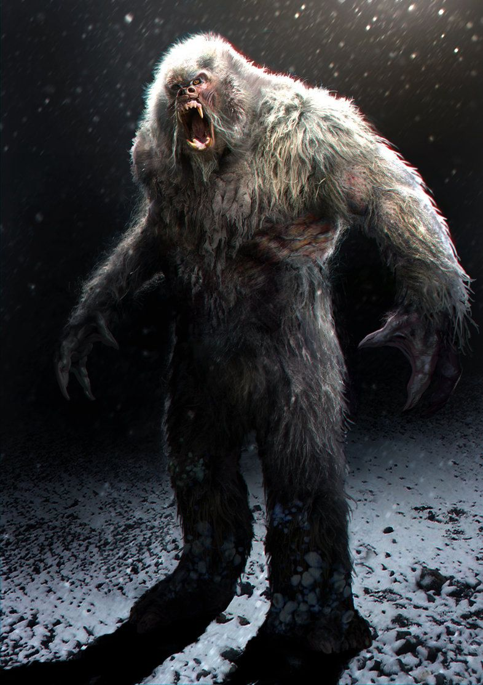
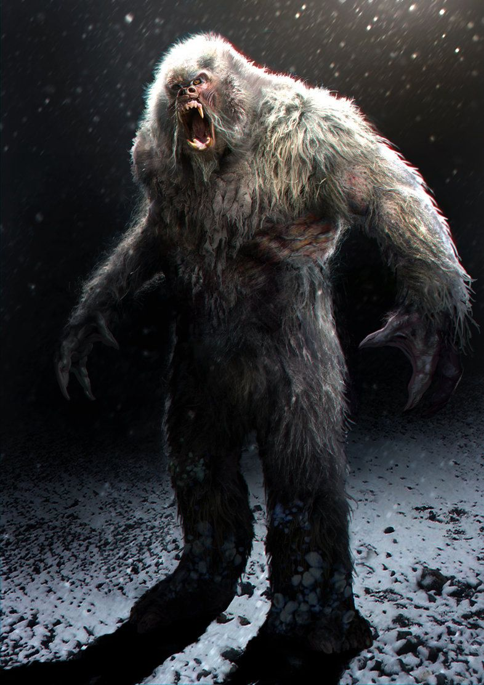
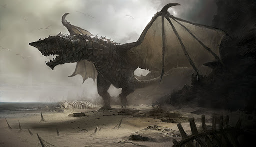
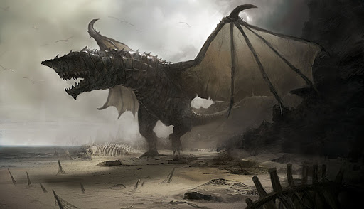

Creepy Crawlers
Hello dear viewers and welcome to Creepy Crawlers! For as long as I can remember I've always been enamored by tales of the unknown. While I've always been a skeptic as a kid I would devour tales of Bigfoot, the legendary Chubacabra, the aloof Yeti, and the mysterious Lockned Monster. And it turns out I'm not alone. The wild tales of HP Lovecraft continue to captivate the imagination of the American public. But why is it that we have such as human beings have such a fascination of the unknown? A PBS article entitled, Why we'll always be obsessed with-and afraid-of monsters so keenly observes that fear perpetually saturates our lives. Whether it was concerns of nuclear war in the past, fear of climate change, fear of uncertainty, or fear of that which is foreign. Humans tend to create objectifications or symbols of our abstract fears, thus enter the monster. The embodiment of fear and abnormality as detailed by the book Haunted. Fictional creatures like Godzilla for instance embodied fears of the nuclear age in Japanese culture follwoing the bombings of Hiroshima and Nagasaki. Creatures like zombies represent fear of death. Bur are all these monsters merely projections of our imagination, or is there any validaty to the legends? Some of the results of this thought excercise may surprise you. That's what we're here to find out with Creepy Crawlers! So grab a nice cup of hot cocoa, settle around the campfire, and enjoy!
Mythical Creatures Gallery
 

 
